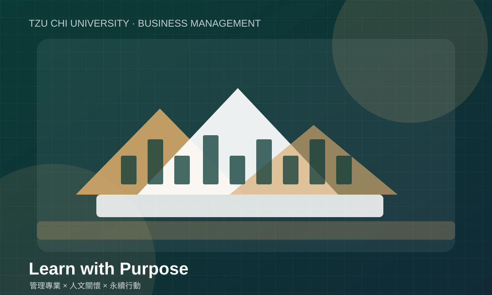
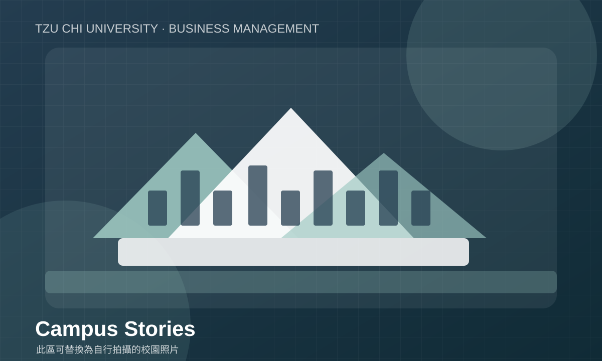

AI 智慧販賣機：讓校園補給更便利
以校園生活需求為出發點，探討智慧零售、商品推薦、庫存管理與行動支付的應用。可補上實際訪談、需求問卷、原型畫面及可行性評估。
示範題目／待置換實際成果可依學期、課程或主題持續新增作品。每個作品建議包含：問題背景、目標對象、分析方法、執行內容、成果與反思。
以校園生活需求為出發點，探討智慧零售、商品推薦、庫存管理與行動支付的應用。可補上實際訪談、需求問卷、原型畫面及可行性評估。
示範題目／待置換實際成果
從消費者需求、服務流程、品牌溝通與競爭環境切入，分析企業面臨的問題，提出具體且可執行的改善建議。
示範題目／待置換實際成果
透過觀察、訪談與服務旅程整理使用者痛點，提出改善方案，並以流程圖、情境測試或使用者回饋檢驗想法。
示範題目／待置換實際成果
盤點校園中的資源使用或消費情境，設計能落實的小型行動，並設定參與人數、減量成果或滿意度等評估指標。
示範題目／待置換實際成果除了最後的簡報或成品，過程中的資料蒐集、決策理由與修正紀錄，也能呈現團隊真正的學習。

老師後續要求自行拍攝素材時，可將照片、訪談片段、成果展示影片放進 graph 資料夾，再替換以下預留區。

建議拍攝 30–90 秒短片：團隊介紹、問題觀察、製作過程、使用者測試與成果分享。請取得受訪者同意，並避免拍到未同意入鏡的人。
檔案建議：graph/student-project.mp4
目前網站未放入未經確認授權的外部影片檔。可依素材來源說明下載可合法使用的影片，或優先使用團隊自行拍攝的素材。
本網站在規劃階段使用生成式 AI 協助整理網站架構、撰寫初稿、設計版面及檢查檔案連結。網站內容仍需由學生依課程要求、官方資料與實際作品進行查核和修改。
透過 AI 協作，我能更快建立網站的基本架構，也學到網站不只是排版，還需要注意檔名、資料夾、相對路徑、跨頁連結與發布設定。AI 產生的內容不能直接視為官方資訊，因此我仍需要確認系所資料、替換真實作品，並檢查網站在手機和電腦上的顯示狀況。

透過老師的課堂講解，學習專題規劃與實務應用。

透過團體桌遊活動，培養學生的團隊合作與溝通能力。